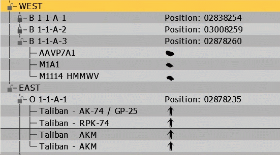
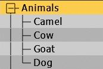
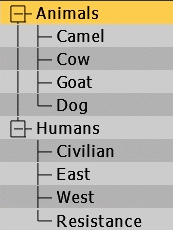

Dialogs Tree
Introduction
Tree controls are used to display hierarchical structures, with collapsible branches and multiple columns.
While engine-controlled trees have always been available in VBS (type 12), only since V3.4 can they also be created by users. The new style of trees is referred to as "advanced trees" (type 107), and all documentation in the article below applies to this new control type.
Related commands: Interactions - User Dialogs - Trees
Demo mission: Dialog Tree.zip
Structure
A tree control consists of a number of rows, each of which represents one "branch".
Each branch (whether it's a top-level branch or already a sub-branch) can itself contain other sub-branches.
Each row can have multiple columns. The number of columns is not defined in the dialog's configuration itself, but depends on how many elements are passed when the branch is advTreeAdd or advTreeSetText.
Rows and columns can be deleted while the dialog is open, and the content following the deleted space will shift up or left to fill the gap. While it is not possible to insert rows or columns, new data can be added at run-time, and through re-arrangements an insertion could be simulated.
The branches are referred to via an index number (which is generated when the branch is advTreeAdd. This index number may correlate with the physical row number of the specific branch, but this is not necessarily so, since the index numbers are created sequentially, and if I first create branch 1,2 & 3, and then add a sub-branch to 2, then its index will be 4.
Content
Any text displayed in a tree control is Structured_Text. This allows the use of different colors, sizes, and even images.
Currently only PAA images can be displayed, and only its alpha channel is shown (as a silhouette).
Usage
Rows
To add a new top-level branch/row to the control, advTreeAdd is called with an index of 0:
_trunk = _treeCtrl advTreeAdd [0,"Animals"];
This returns the index of the created branch (in case of the first entry, this would be 1).
To then add a sub-branch, the index of that first branch is used as the index for the next advTreeAdd calls:
_treeCtrl advTreeAdd [_trunk,"Camel"];
_treeCtrl advTreeAdd [_trunk,"Cow"];
To add another top-level entry, advTreeAdd is called once more, again with an index of 0:
_trunk = _treeCtrl advTreeAdd [0,"Humans"];
The returned index (which is now 6: five existing rows, plus the newly created one) is then used to add more sub-branches:
_treeCtrl advTreeAdd [_trunk,"Civilian"];
_treeCtrl advTreeAdd [_trunk,"East"];
Columns
Each row can have multiple columns, to display text (the branching always happens in the first column).
Method 1: When the branch is created (via advTreeAdd), instead of a string an array is passed (with one text element per column). This works for top-level, as well as sub branches:
_trunk = _treeCtrl advTreeAdd [0,["Animals","Health","Location"]];
_treeCtrl advTreeAdd [_trunk,["Camel",str _health,_pos]];
The second method (which also allows the modification of existing rows) uses the advTreeSetText command, to set the content of a specific column for the selected row (the row count is zero-based, i.e. the index for the leftmost column is 0). If only a string is passed (instead of an array), the data will be put into the first column.
_branch = _treeCtrl advTreeAdd [_trunk,""]; // create an empty sub branch
_treeCtrl advTreeSetText [_branch, "Cow"]; // put "Cow" into the 1st column
_treeCtrl advTreeSetText [_branch, [1,str _health]]; // put the health number into the 2nd
_treeCtrl advTreeSetText [_branch, [2,_pos]]; // and the position into the 3rd
Properties
Only properties unique to this control type are listed. For general properties, see the Properties page.
(A definition for Dialogs_Scrollbars must be included in the tree's control class.)
|
Name |
Type |
Required |
Remark |
Script |
|
type |
Yes |
Control type: 107 (or CT_ADV_TREE, if using constants) |
n/a |
|
|
style |
Yes |
Display options:
|
n/a |
|
|
defaultColumnWidth |
No |
Default width of each column. |
||
|
rowHeight |
No |
Height of each row. This property only defines the space a row will take up, but not how much of it is usable - that is done via 'sizeEx'. e.g. if 'rowHeight' is set to 0.1, but 'sizeEx' is set to 0.02, then a doubling of the text size (via the size will result in truncated letters, even though the overall space would be adequate. |
n/a |
|
|
colorText |
Yes |
Color of lines that connect branches. |
n/a |
|
|
colorBackground |
Yes |
Background color. Solid color filling the whole control area. |
n/a |
|
|
colorBorder |
No |
Color of border drawn around the whole control. |
n/a |
|
|
rowColorBackground1 |
Yes |
Background color of odd lines (line 1,3,etc.). |
n/a |
|
|
rowColorBackgroundSelected1 |
Yes |
Background color of odd lines, when they have focus. |
n/a |
|
|
rowColorText1 |
Yes |
Text color for odd lines. |
n/a |
|
|
rowColorTextSelected1 |
Yes |
Text color for odd lines, when they have focus. |
n/a |
|
|
rowColorBackground2 |
Yes |
Background color of even lines (line 2,4,etc.). |
n/a |
|
|
rowColorBackgroundSelected2 |
Yes |
Background color of even lines, when they have focus. |
n/a |
|
|
rowColorText2 |
Yes |
Text color for even lines. |
n/a |
|
|
rowColorTextSelected2 |
Yes |
Text color for even lines, when they have focus. |
n/a |
|
|
iconExpand |
No |
Path to image (PAA) that should be shown when a branch has been expanded. Default: minus sign |
n/a |
|
|
iconExpandColor |
No |
Color of image 'iconExpand'. |
n/a |
|
|
iconCollapse |
No |
Path to image (PAA) that should be shown when a branch has been collapsed. Default: plus sign |
n/a |
|
|
iconCollapseColor |
No |
Color of image 'iconCollapse'. |
n/a |
Event Handlers
Several event handlers can be assigned to buttons. Check Reference ListUser for details (if the column "scope" contains a "Tr", then that respective event can be used with tree controls).
Examples
The mission Dialog Tree.zip contains a demonstration of the examples shown below.
Tree Control Definition
All of the examples use the same dialog definition. The number of columns (and their widths) are defined by the scripts that populate the tree control.
class DlgTree {
idd = 20000;
movingEnable = true;
class controls {
class Tree {
idc = 20000;
type = 107; // CT_ADV_TREE
style = 0; // TR_AUTOCOLLAPSE:2 | ST_DYNAMIC_HEIGHT:224
x = 0.1; y = 0.3;
w = 0.8; h = 0.4;
sizeEx = .026; // font size (and usable column height)
font = "TahomaB";
colorText[] = {0, 0, 0, 1}; // connection line color
colorBorder[] = {0, 0, 0, 1};
colorBackground[] = {0.2, 0.2, 0.2, 1};
// odd rows
rowColorBackground1[] = {0.7, 0.7, 0.7, 1};
rowColorBackgroundSelected1[] = {1, 0.8, 0.3, 1};
rowColorText1[] = {0, 0, 0, 1};
rowColorTextSelected1[] = {0, 0, 0, 1};
// even rows
rowColorBackground2[] = {0.8, 0.8, 0.8, 1};
rowColorBackgroundSelected2[] = {1, 0.8, 0.3, 1};
rowColorText2[] = {0, 0, 0, 1};
rowColorTextSelected2[] = {0, 0, 0, 1};
class VScrollbar {
color[] = {1, 1, 1, 1};
width = 0.021;
autoScrollSpeed = -1;
autoScrollDelay = 5;
autoScrollRewind = false;
shadow = 0;
};
class HScrollbar : VScrollbar {
height = 0.028;
};
};
};
}; Single, branched tree
// create dialog, and get tree control createDialog "DlgTree"; waitUntil {dialog}; _treeCtrl = findDisplay 20000 displayCtrl 20000; // adjust the column widths _treeCtrl advTreeItemSetColumnSize [0, .13]; _treeCtrl advTreeItemSetColumnSize [1, .08]; // create the top-level (header) row _trunk = _treeCtrl advTreeAdd [0,["Animals","Health","Location"]]; // find all animals in mission { if (_x isKindOf "vbs2_animal_base") then { // add one row per animal, with data for 3 columns (name, health, position) _treeCtrl advTreeAdd [_trunk,[str _x,str(1-(getDammage _x),positionToGrid (getPos _x)]]; }; }forEach allUnits; // display the tree in expanded mode _treeCtrl advTreeExpand 1;
Multiple, nested braches
This example uses custom expand/collapse icons, defined as an alternative control class, which inherits all other properties from the 'Tree' class defined above: // description.exe class Tree2 : Tree { idc = 20001; iconExpand = "\vbs2\ui\data\vbs3_unlocked_ca.paa"; iconExpandColor[] = {0.4, 0.4, 0.4, 1}; iconCollapse = "\vbs2\ui\data\vbs3_lock_ca.paa"; iconCollapseColor[] = {0.3, 0.3, 0.3, 1}; };
// create dialog, and get tree control createDialog "DlgTree"; waitUntil {dialog}; _treeCtrl = findDisplay 20000 displayCtrl 20001; // create the top-level (header) row _trunk = _treeCtrl advTreeAdd [0,"Troop Strengths"]; { // go through both sides _side = _x; create a sub-branch for each side _sideBranch = _treeCtrl advTreeAdd [0,str _side]; { // go through all groups _grp = _x; if (side leader _x==_side) then { create another sub-branch under the side branch for each groups _grpBranch = _treeCtrl advTreeAdd [_sideBranch,str _grp]; // populate the group branch with position information for the leader _pos = positionToGrid (getPos leader _grp); _treeCtrl advTreeSetText [_grpBranch, [1,format["Position: %1",_pos]]]; _vehicles = []; { _veh = vehicle _x; if !(_veh in _vehicles) then { _vehicles = _vehicles + [_veh]; // for each infantry unit or vehicle add one row _dName = getText(configFile>>"cfgVehicles">>typeOf _veh>>"displayName"); _pic = previewPicture (typeOf _veh); _unitBranch = _treeCtrl advTreeAdd [_grpBranch,[_dName,format["<img image='%1' />",_pic]]]; }; }forEach (units _grp); }; }forEach allGroups; }forEach [west,east];